Причини виникнення українського козацтва
Не маючи надії на захист степових кордонів державою, український народ організував його самотужки. Цю роль взяло на себе українське козацтво. Термін «козак» вперше зустрічається в джерелах XIII ст. - монгольській хроніці, датованій 1240р. У перекладі з тюркської означає «одинокий», «схильний до розбою, завоювання». Існують й інші трактування цього слова. Так, у словнику половецької мови за 1303 р. це слово перекладається як «страж», або «конвоїр», у 1489 р. воно вперше з'явилося в Україні на означення людей, що ходили в степ за здобиччю або боротися з татарами.
Нині не викликає сумніву, що основна причина утворення козацтва закорінена в тих соціально-політичних умовах, які склалися на українських землях у другій половині XV-XVI ст. Польща і Литва все більше обмежували самоврядування українських земель, аж до ліквідації залишків їхньої автономності. Посилювалась експансія католицизму. Водночас зміцнювався клас феодалів - шляхетство, внаслідок чого його землеволодіння на Україні розширювались. А становище українського населення погіршувалось з кожним роком.
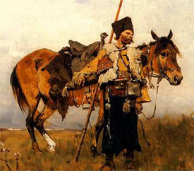Особливість суспільного життя в Україні в XV - першій половині XVI ст. полягала також і в тому, що основна маса населення зосереджувалася на обжитих землях Галичини, Поділля, Волині, Полісся, північної Київщини. Саме тут і відбувалося посилення кріпацтва. Решта території України - Середнє Подніпров'я, Побужжя, Запорожжя - була майже не заселена. В цих районах на порубіжжі з Диким полем знаходились прикордонні військові гарнізони (міста Остер, Канів, Брацлав, Вінниця). Далі тягнулись незаймані землі, де було багато дичини, риби, диких коней. Ватаги так званих ухідників із прикордонних селищ селились на уходах - в гирлах річок - і там рибалили, добували мед, полювали. Невдовзі до ухідників почали приєднуватись селяни-втікачі з Галичини, Волині, Полісся, Західного Поділля.
Вже у другій половині XV - на початку XVI ст. на Наддніпрянщині утворились загони вільних озброєних людей із різних соціальних прошарків: від ухідників, селян та міщан до дрібної збіднілої шляхти і православного духовенства.
На формування козацького стану істотний вплив мав воєнний чинник. У XV-XVII ст. південь України був охоплений полум'ям безперервної боротьби з татаро-турецькими загарбниками.
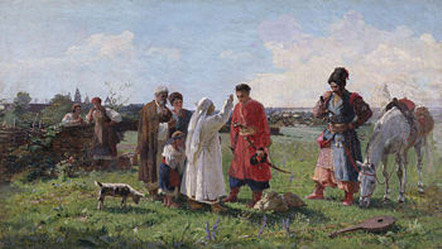Серед перших організаторів козацьких загонів були старости прикордонних міст: Остафій Дашкович, Предслав Лянцкоронський, Бернард Претвич, а також сини магнатів Заславських, Корецьких та інші. Їхніми зусиллями стихійно створені загони набували все більш організованої форми.
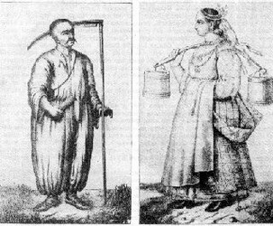Помітну роль у формуванні козацтва відіграло розширення господарської діяльності українського народу, освоєння степової зони, що базувалось на вільній праці. Вільний труд на вільній землі є невіддільним від самої суті козацтва і становить одну з його фундаментальних рис.
Організація життя і побуту козаків
На Запорожжі відбувалося становлення господарства якісно нового типу, яке виходило за межі середньовічної цивілізації. Козаки займались розведенням худоби, полюванням, рибальством, виробленням горілки і пива, видобутком солі та меду.
Січ була розташована на шляху, який зв'язував густо населені райони України з морем, тому, незважаючи на постійну степову війну, купці з допомогою козаків вели торгівлю з Кримом і Туреччиною. Господарство велося спільними зусиллями, але в господарських справах все більшу роль почали відігравати заможні козаки, що вклали в степові промисли і торгівлю свої капітали.
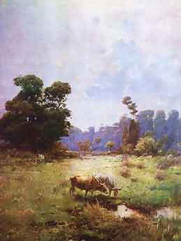 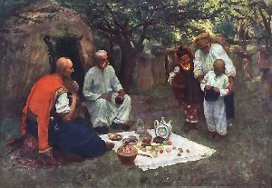Щовесни запорожці в куренях методом жеребкування розподіляли між собою обов'язки - кому лишатися в Січі на випадок походу або нападу татар, а кому йти на промисли. Як тільки скресала крига на річках, половина козаків виходила на свої вольності рибалити або полювати. Рибу засолювали, скільки потрібно залишали собі, а решту везли на продаж в Україну. На отримані гроші купували борошно, пшоно, порох та олово. Торгували також шкірами та хутром.
Умови життя козаків були суворими й простими, вимагали фізичної витривалості, здатності витримувати холод і спеку. Одяг простих козаків був із домотканого сукна й полотна. Із нього шили широкі шаровари, сорочку, поверх яких одягалися широкополі кобеняки та киреї, що підперізувалися поясом. Взуттям слугували чоботи, а головним убором шапка.
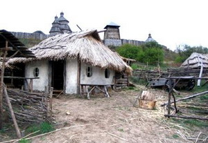Козацька їжа була невибагливою, але поживною. Вони готували саламаху, тетерю, щербу - варені страви з пшона, житнього борошна й риби, уживали в їжу смажену дичину і в'ялену рибу. В короткі хвилини дозвілля козаки любили заспівати пісню, послухати гру на кобзі або затанцювати.
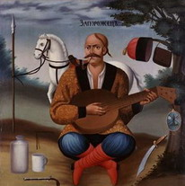 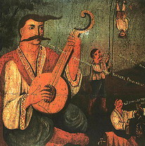Жили козаки здебільшого бідно. Козацькі звичаї дозволяли їм мати небагату одежину і зброю. Все майно і здобич, що привозили з набігів на турків і татар - шовки, оксамити, коней, гроші, - вони мали здавати курінному отаману. На Січі військова рада розподіляла все здобуте: не менше половини здобичі йшло на церкви й монастирі, частина грошей - в січову скарбницю, решта розподілялась між товариством порівну. Більшість козаків отриману частину відразу пропивала в шинках, прогулювала з товаришами або вимінювала на коней. Прості козаки легко переносили життєві незгоди, мали простий побут, нехтували грішми та багатством, харчувались разом у куренях.
Щоправда, з появою реєстрового козацтва і подальшим розвитком січового господарства та торгівлі становище козацтва дещо змінилося. Більшість і далі залишалася голотою, що пишалася своєю бідністю, але поруч з нею з'явились заможні верстви козацької старшини. Вони відрізнялись одягом, зброєю, намагались жити і харчуватись окремо від товариства, чим викликали обурення простого козацтва. Але майнове розшарування, що почалося серед козаків вже наприкінці XVI ст., неможливо було зупинити. Прірва між різними верствами козацтва дедалі поглиблювалася, що призвело до гострих соціальних конфліктів у козацькому таборі.
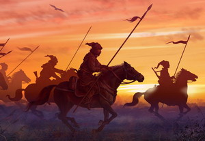На другу половину XVI ст. січовики створили велике військо. Основу його становила піхота. Запорожці відправлялись в похід верхи, але воювали як піші воїни. Разом з військом йшов табір, що складався з легких возів: на відкритих місцевостях під прикриттям возів велися бойові операції. Якщо вороги дуже насідали, то запорожці розташовували вози в кілька рядів (лав), і доки передня лава стріляла, задні лави набивали рушниці та передавали зброю переднім, так що кулі летіли надзвичайно рясно. Вози прив'язували один до одного ланцюгами. Під час походів у війську була залізна дисципліна, заборонялись спиртні напої, гра в карти, суперечки. Зброю запорожці мали різноманітну: в XV та XVI ст. перевагу надавали сагайдакам зі стрілами, списам, келепам і гаківницям, пізніше в запорожців були рушниці або мушкети, шаблі, списи й пістолі. Окрім того, доброю зброєю були чингалі, здобуті у турків ятагани. Кожен носив ту зброю, яку спромігся купити або здобути в бою. Гармат запорожці самі не виплавляли, а воювали тими, які відбивали у ворога.
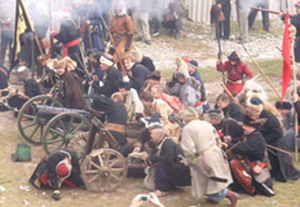Зростанню міжнародного авторитету Запорожжя сприяли і морські перемоги січовиків, здобуті завдяки своєрідному легкому, рухливому флоту, що складався із уславлених човнів-чайок.
Козацькі чайкиВійськовий флот війська становили виключно чайки, які називали байдаками. Вони були невеликі - 20 м завдовжки і 3-4 м завширшки, з обох боків мали по 15-20 весел, посередині кріпили щоглу з вітрилом; були озброєні легкими гарматами і брали на борт 50-70 осіб. Запорожці використовували також трофейні турецькі галери.
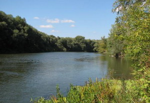На своїх плоскодонних кораблях козаки могли проходити плавні, мілини і навіть дніпровські пороги. На них вони добирались не тільки до Очакова, а й до узбережжя Криму і навіть до Константинополя, прорвавши турецько-татарську блокаду на морі.
Заснування Запорізької Січі. Дмитро (Байда) Вишневецький
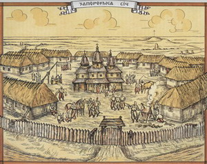Запорозька Січ виникла у нижній течії Дніпра. На той час Дніпро перетинали пороги - кам'яні скелі. Всіх порогів на Дніпрі було дев'ять: Кодацький, Сурський, Лоханський, Овонецький, Ненаситець, Вовнігський, Будилівський, Лишній і Вільний. Всі вони, хоч і робили майже несудоплавним Дніпро, надійно прикривали козаків від нападів з боку Польщі по головній водній артерії. Нижче порогів у Дніпро впадали численні притоки. Тут, за неприступними порогами, серед незліченних островів (майже 250), непрохідних очеретів і розлогих степових ділянок було найкраще місце для постійної опорної бази козацтва. На південь від порогів у пониззі Дніпра виникало чимало кам'яних островів, де ще на початку XVI ст. козаки споруджували невеликі укріплення - городки, в яких знаходили захист від степових орд. Але розпорошені городки-січі з невеликими загонами не могли стримати натиску турецько-татарських загонів з півдня і польсько-литовських військ з півночі. Тому козаки об'єдналися і створили в 30-40-х роках XVI ст. фортецю під назвою Запорозька Січ, до якої увійшли й невеликі городки-січі.
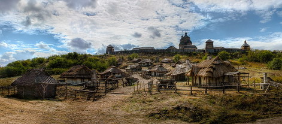Причини змін різні: більші зручності, стратегічні міркування, брак води, підмивання фортеці Дніпром, шкідлива для здоров'я місцевість тощо. Польський хроніст Бельський у «Всесвітній хроніці» (Краків, 1551 р.) вперше розповів про існування за порогами Дніпра козацького коша і фортеці на острові Томаківка. Протягом свого двохсотрічного існування запорозькі козаки послідовно змінили вісім Січей: Хортицьку, Базавлуць-ку, Томаківську, Микитинську, Чортомлицьку, Олешківську, Кам'янську й Нову, або Підпільненську.
Найважливіший і найбільший з усіх островів на Дніпрі був острів Хортиця. Він відігравав свого часу роль стратегіної бази при розселенні козаків за порогами, тому саме тут в 1552-56рр. волинський православний магнат Дмитро (Байда) Вишневецький збудував замок і оточив його козацькою залогою. Тут він двічі оборонявся від татар, протримавшись на острові майже 10 років. Ця обставина, а також численні археологічні і письмові джерела дали підставу відомому досліднику історії козацтва Д. Яворницькому вважати саме Хортицьке укріплення матір'ю козацьких січей, а князя Вишневецького - духовним батьком Запорожжя. Занепад Хортицької Січі вже ніяк не позначився на козацькій громаді. Військовий центр переходив з острова на острів, подальшу організацію запорозького війська проводили послідовники легендарного Байди-Вишневецького, що дало змогу Запорозькій Січі протягом другої половини XVI - у першій половині XVII ст. еволюціонізувати до високих організаційних форм.
Для Січі запорожці завжди вибирали сухе й високе місце на березі Дніпра або якоїсь його притоки і, лишивши посередині тієї площі майдан, ставили навколо нього 38 довгих хат-куренів, де товариство мало притулок під час негоди. Посеред майдану височів стовп. Це було місце зборів і покарань. Окрім куренів, у Січі зводили церкву на честь святої Покрови; паланку-будинок, де зберігалися військові клейноди, містилася канцелярія й чинився суд і розправа; пушкарню - неглибокий, але просторий льох, у якому тримали гармати, ручну зброю, кінську упряж, порох, кулі, сірку, селітру та інше військове майно; скарбницю - такий самий льох для зберігання борошна, сала, риби й іншого харчового припасу. Там само, в невеликих барильцях, переховували військові гроші.
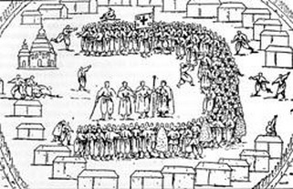 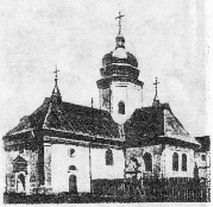Навколо січових будівель копали окопи, а поверх земляних валів робили засіки з дубів, пізніше - стіни, виплетені з лози й набиті глиною або викладені з лозяних кошелів, наповнених глиною.
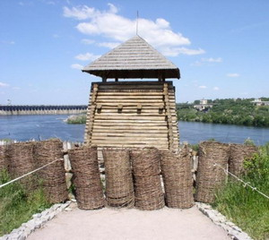В окопах лишали двоє воріт: головні - з боку степу та бокові - з базару. Біля воріт робили здебільшого плетені з лози та закидані глиною башти, на яких ставили гармати. Базар завжди містився за січовими окопами, там на майдані стояли крамниці й шинки, де в мирні часи торгували не тільки люди з України, а й татари, московити, греки, вірмени, євреї. До берега (глибокої затоки) приставали у мирні часи грецькі, турецькі й італійські кораблі з усяким крамом. З того краму певна частина лишалася в крамницях, більша ж розкуповувалася прямо з кораблів польськими та московськими торговими людьми, що часто приїздили на Січ за рибою, шкірою, медом і вощиною. Одночасно на Січі перебувало кілька тисяч козаків, частина була на уходах, в степових залогах. ...Ось уже століття вчені-фольклористи марно доводять, що вельми популярна і здавна улюблена всіма українська народна пісня про козака Байду аж ніяк не стосується відомого козацького проводиря, гетьмана, легендарного князя Дмитра Вишневецького. Але народ, котрий склав цю пісню, доніс її до нас, твердо вірить, що присвячена вона саме Байді-Вишневецькому, хоча реальне його життя і те, яке зображене в ній, не у всьому відповідають одне одному.
ВИШНЕВЕЦЬКИЙ ДМИТРО
ВИШНЕВЕЦЬКИЙ ДМИТРО (р. н. невід. - п. 1563) - український князь, перший з достовірно відомих козацьких гетьманів (приблизно 1552-1563). Походив з старовинного волинського роду Гедиміновичів. Власник земельних маєтків у Кременецькому повіті. В 1550-1553 - староста Черкаського і Канівського повітів. Близько 1552 (за ін.даними 1554-1555,1556) збудував на острові Мала Хортиця замок, який став прототипом Запорізької Січі і згуртував на боротьбу проти татар кілька сот козаків. У 1554 знову призначений Сигізмундом II Августом старостою канівським і черкаським. В 1557-1558 відбивав напади кримських татар на чолі з ханом Девлет-Гіреєм І на Хортицю. В жовтні 1657 Вишневецький на чолі козаків здобув турецьку фортецю Іслам-Кермен і вивіз звідти всі гармати на Хортицю. Вишневецький пробував організувати союз держав (Польща, Московія), в якому би брали участь і запорожці для боротьби проти Туреччини і Кримського ханства. На початку 1559 здійснив вдалий похід у Крим, визволивши з неволі кілька тисяч українських невільників. У червні запорожці під проводом Вишневецького напали на турецьку фортецю Азов. У 1563 втрутився в боротьбу за молдавський престол. Під час походу у Молдавії 4-тисячний козацький загін на чолі з Вишневецьким зазнав поразки у бою під Сучавою від військ претендента на молдавський престол Стефана IX Томші.
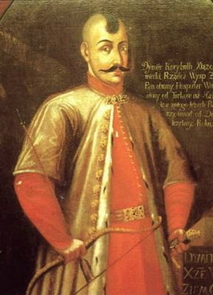 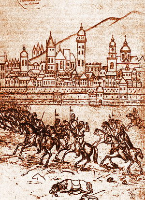Вишневецький був взятий в полон і виданий турецькому уряду. За повідомленням "Хроніки Мартина Бєльського" Вишневецький після жорстоких катувань за наказом султана Сулеймана II був скинений з вежі на залізні гаки, вмуровані у прибережну стіну в Константинополі, він провисів на ньому три дні, доки турки, обурені прокльонами, спрямованими проти мусульманської віри, застрелили його із луків. Вишневецький-герой української народної думи про Байду.
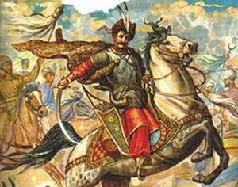Ознайомившись з коротким викладом його життя, можна поставити собі запитання: за віщо ж така честь? Адже, будучи представником правлячої верхівки панівного класу, Вишневецький не забував про свої інтереси і відстоював насамперед їх. Відповідь, очевидно, полягає у тому, що інтереси самого Дмитра Вишневецького - захист Батьківщини від турків і татар - співпадали з інтересами низового козацтва, що у боротьбі з ними він стояв на боці народу і особистою хоробрістю, відвагою сприяв успіхові цієї боротьби. Спорудивши містечко-фортецю на Хортиці, він зумів об'єднати тут козацькі сили, які визнали у ньому справжнього керівника і гетьмана.